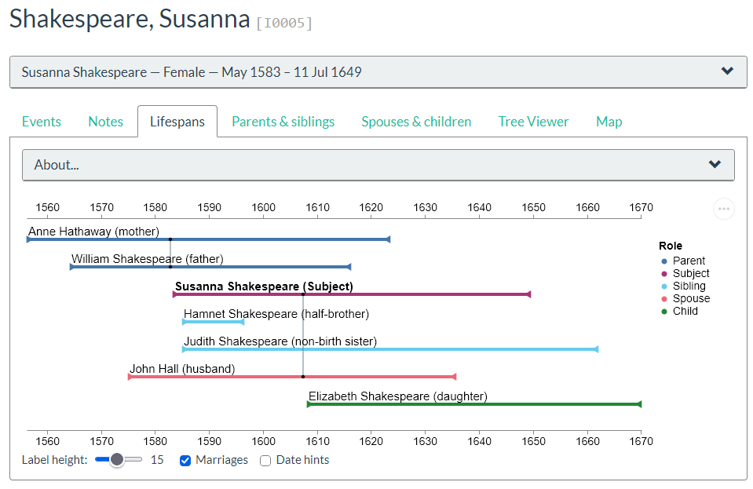
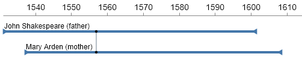
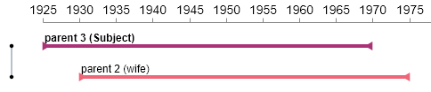

8 Lifespans¶
The Lifespans tab provides a graphical view of a person's life in relation to the lives of their immediate family. It makes it easy to see how the person's lifespan overlaps those of their parents, siblings, spouses and children.
The display consists of horizontal lifespan bars arranged against a common time scale. The person whose page is being viewed is the subject of the display.
If you hover over a person’s lifespan bar (or either side of it) their birth and death dates and places are displayed.

Figure 11 - Lifespans chart
8.1 People shown¶
The Lifespans display groups people according to their relationship to the subject:
-
Parents
-
Siblings, including the subject
-
Spouses
-
Children
The subject is shown among their siblings, making it easier to see the order and overlap of the children's lives within the family.
A person can belong to more than one family or have more than one set of parents. DWE uses the parent-child relationships recorded in Gramps when finding the people to include and when describing their relationship to the subject. These can include birth, adoptive, foster, step and other parent-child relationships explicitly recorded in Gramps.
A person who occurs more than once as a child of the subject is shown only once in the Lifespans display.
Relatives are grouped by their relationship to the subject rather than by individual family. The Parents & siblings and Spouses & children sections on a person's page can be examined when the individual family structures and recorded relationships need to be viewed in more detail.
Relatives excluded by a selected Person filter at the time the report is created do not appear in the diagram.
8.2 Lifespan bars and markers¶
Where both birth and death dates are available, a horizontal bar shows the person's lifespan between the two dates. Birth and death are also indicated by markers on the timescale.
If only a birth date or only a death date is available, a marker is shown for the known date, but no lifespan bar can be drawn. When birth and death are very close together, the markers are displayed in a form that makes them easier to distinguish.
Each person is identified by name and by their relationship to the subject. The different family roles are also distinguished by colour. The colours are shown in a Legend on the right.
8.3 Dates and ordering¶
Parents, siblings and children are ordered by birth date where available. Spouses are ordered by marriage date where available. People for whom the relevant date is unknown are placed after those with known dates and are still included in the display, rather than being discarded. This allows the chart to remain useful even when some dates in the family tree are incomplete.
8.4 Timescale¶
The Lifespans timescale extends from the earliest to the latest date that can be plotted for the people included in the chart. Birth, death and marriage dates affect the extent of the timescale.
To make it easier to compare a person's dates with the timescale and with other lifespans, hover over the person's name. Vertical date hints extending towards the timescale are displayed and change as you move from person to person.
The date hints can be shown or hidden using the Date hints checkbox. The setting is remembered by the browser.
8.5 Marriage events¶
Marriage events are shown on the Lifespans display so that marriages can be seen in the same time context as births, deaths and other family members' lifespans. Hover over a marriage marker to display its date and place. The marriage marker is a vertical line joining the two participants, placed at the appropriate date if known.

Figure 12- marriage marker
Marriage events can be shown or hidden using the Marriages checkbox. The setting is remembered by the browser.
Undated marriages
When a marriage is recorded in Gramps but has no usable date, it is displayed in a separate area to the left of the dated timeline. If several undated marriages are present, their connecting lines are spaced horizontally to distinguish them. If there are no undated marriages, the separate area is omitted.

Figure 13- display of an undated marriage
8.6 Label height¶
Depending on the size of your screen and the number of people shown in the chart, you may want to adjust the label size to make the chart easier to read.
The Label height slider changes the font size of the person labels. The selected label height is remembered by the browser and is used for other Lifespans charts you view.
Changing the label height does not change the vertical spacing between people.
8.7 Moving to another person¶
Each person's name in the Lifespans display is a link. Select a name to move to that person's page. Their page opens with the last view you used for that page. You can select their Lifespans tab to see the chart for that person and their family.
8.8 Saving the chart¶
The Lifespans chart can be saved as an image. Select the three-dot menu at the upper right of the chart and choose Save as SVG or Save as PNG. The files are named lifespans.svg or lifespans.png and are normally saved in the browser's Downloads folder.
SVG is particularly useful if the chart is to be enlarged, printed or edited later, because it is a vector format and can be resized without losing quality. PNG is convenient for ordinary image use.
8.9 About… note¶
The website creator can provide an optional note containing information about the Lifespans display. When a Lifespans note has been selected in the DWE Options, it is displayed under About... If no note has been selected, the About section is not shown.